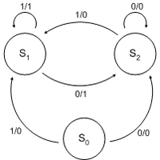

Autómatas de Estado Finito
Los autómatas de estado finito (AEF) son modelos matemáticos utilizados para describir sistemas que pueden encontrarse en diferentes estados y cambiar entre ellos en respuesta a ciertos estímulos. Estos sistemas finitos se utilizan en la teoría de la computación, diseño de circuitos, reconocimiento de patrones y más. Vamos a explorar los aspectos fundamentales de los autómatas de estado finito.
1. Definición y Estructura
Un AEF consta de un conjunto finito de estados, un conjunto finito de símbolos de entrada, una
función de transición que describe cómo el autómata cambia de estado en respuesta a los símbolos
de entrada, un estado inicial y un conjunto de estados finales.

2. Componentes Clave:
Estado: Representa una condición o situación específica en la que puede
encontrarse el sistema.
Símbolos de Entrada: Son los estímulos que provocan transiciones entre estados.
Función de Transición: Define cómo el autómata cambia de un estado a otro cuando se
presenta un símbolo de entrada.
Estado Inicial y Estados Finales: Especifican el punto de partida y los estados que
indican la finalización exitosa del procesamiento.

3. Tipos de Autómatas de Estado Finito:
Deterministas (AEFD): Para cada par estado-símbolo, hay una única transición posible.
No Deterministas (AENFD): Para un par estado-símbolo, puede haber múltiples transiciones
posibles, lo que introduce no determinismo.
4. Aplicaciones y Casos de Uso:
Reconocimiento de Lenguajes: Los AEF se utilizan para reconocer patrones y
cadenas en la teoría de lenguajes formales.
Diseño de Circuitos: En la implementación de circuitos digitales y control de sistemas.
Compiladores y Analizadores Léxicos: En el análisis y reconocimiento de tokens en
la construcción de compiladores.
5. Historia de los Automatas de los estados finitos:
Los autómatas de estado finito, surgidos en las décadas de 1940 y 1950 como modelos
matemáticos para sistemas automáticos, fueron introducidos por Edward F. Moore en 1959
y se consolidaron en la teoría de máquinas de estado.
A lo largo de las décadas siguientes, investigadores como Michael O. Rabin y Dana Scott continuaron
desarrollando la teoría, explorando conexiones con la teoría de juegos en la década de 1980.
En tiempos recientes, los autómatas de estado finito se han convertido en herramientas esenciales
en áreas como inteligencia artificial, procesamiento de lenguaje natural y diseño de sistemas de
control automatizado.